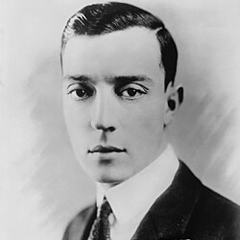
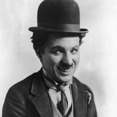
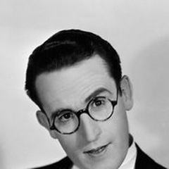
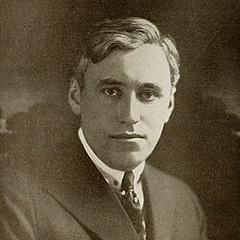
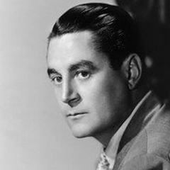

Görsel Komedi
Diyalogdan çok fiziksel oyuna, zamanlamaya ve yaratıcı görsel şakalara dayanan komedi.
Ses gelmeden önce komedyenler şakalarını bedenleri ve kameralarıyla anlattı. Chaplin'in Serseri'si slapstick'i şefkatle karıştırdı, Keaton taş gibi yüzünün çevresine olanaksız derecede kusursuz hileler kurdu, Harold Lloyd'un heyecanlı komedileri onu gökdelen saatlerinde asılı bıraktı. Mack Sennett'in Keystone stüdyosu Hollywood'a şakaları hız için kesmeyi öğretti; gelenek Laurel ve Hardy'de, Jacques Tati'nin hâlâ neredeyse hiç diyalog kullanmayan sesli dönem filmlerinde ve birçok sonraki komedyende sürdü. Sanat, zamanlamada, koreografide ve nesnelerin ile insanların nasıl ters gidebileceğini görmekte yatar.
- Nerede
- önce Amerika Birleşik Devletleri, sonra Fransa ve başka yerler
- Ne zaman
- 1910'lardan 1970'lere
- Önemli isimler
- Charlie Chaplin, Buster Keaton, Harold Lloyd, Mack Sennett, Leo McCarey, Jacques Tati
- Başyapıtlar
- Çocuk (1921), General (1926), Safety Last! (1923), Bay Hulot'nun Tatili (1953)
- Miras
- Chaplin'in hüznünden Tati'nin görsel hicvine, fiziksel komedinin kalıbını belirledi
Nelere bakmalı
- Diyalogla değil zamanlama, nesne ve hareketle kurulan şakalar
- Büyük, düşmanca bir dünyaya karşı küçük, savunmasız bir kahraman
- Tüm eylemi gösteren uzun planlarda, gerçekten çekilen akrobasiler
Ünlü Yönetmenler

Buster KeatonABD
Charlie ChaplinBirleşik Krallık / ABDJacques TatiFransa
Harold LloydABD
Mack SennettABD (Kanada doğumlu)
Leo McCareyABDEn iyi filmler · 55 film
- City Lights 1931 · Charlie Chaplin · IMDb 8,5
- Modern Times 1936 · Charlie Chaplin · IMDb 8,5
- The Great Dictator 1940 · Charlie Chaplin · IMDb 8,4
- The Kid 1921 · Charlie Chaplin · IMDb 8,2
- The General 1926 · Buster Keaton · IMDb 8,1
- One Week 1920 · Buster Keaton · IMDb 8,1
- Sherlock Jr. 1924 · Buster Keaton · IMDb 8,1
- The Gold Rush 1925 · Charlie Chaplin · IMDb 8,1
- The Circus 1928 · Charlie Chaplin · IMDb 8,1
- Safety Last! 1923 · Harold Lloyd · IMDb 8,1
- Make Way for Tomorrow 1937 · Leo McCarey · IMDb 8,1
- Limelight 1952 · Charlie Chaplin · IMDb 8,0
- Seven Chances 1925 · Buster Keaton · IMDb 7,8
- Steamboat Bill, Jr. 1928 · Buster Keaton · IMDb 7,8
- Monsieur Verdoux 1947 · Charlie Chaplin · IMDb 7,8
- Playtime 1967 · Jacques Tati · IMDb 7,8
- Our Hospitality 1923 · Buster Keaton · IMDb 7,7
- Duck Soup 1933 · Leo McCarey · IMDb 7,7
- A Dog's Life 1918 · Charlie Chaplin · IMDb 7,6
- Girl Shy 1924 · Harold Lloyd · IMDb 7,6
- The Kid Brother 1927 · Harold Lloyd · IMDb 7,6
- Speedy 1928 · Harold Lloyd · IMDb 7,6
- The Awful Truth 1937 · Leo McCarey · IMDb 7,6
- Mon Oncle 1958 · Jacques Tati · IMDb 7,6
- Cops 1922 · Buster Keaton · IMDb 7,5
- The Navigator 1924 · Buster Keaton · IMDb 7,5
- The Immigrant 1917 · Charlie Chaplin · IMDb 7,5
- The Freshman 1925 · Harold Lloyd · IMDb 7,5
- For Heaven's Sake 1926 · Harold Lloyd · IMDb 7,5
- Ruggles of Red Gap 1935 · Leo McCarey · IMDb 7,5
- An Affair to Remember 1957 · Leo McCarey · IMDb 7,4
- Shoulder Arms 1918 · Charlie Chaplin · IMDb 7,3
- Monsieur Hulot's Holiday 1953 · Jacques Tati · IMDb 7,3
- The Pilgrim 1923 · Charlie Chaplin · IMDb 7,2
- Jour de fête 1949 · Jacques Tati · IMDb 7,2
- The Boat 1921 · Buster Keaton · IMDb 7,1
- Go West 1925 · Buster Keaton · IMDb 7,1
- Dr. Jack 1922 · Harold Lloyd · IMDb 7,1
- Hot Water 1924 · Harold Lloyd · IMDb 7,1
- Movie Crazy 1932 · Harold Lloyd · IMDb 7,1
- The Three Ages 1923 · Buster Keaton · IMDb 7,0
- Battling Butler 1926 · Buster Keaton · IMDb 7,0
- A King in New York 1957 · Charlie Chaplin · IMDb 7,0
- Grandma's Boy 1922 · Harold Lloyd · IMDb 7,0
- Going My Way 1944 · Leo McCarey · IMDb 7,0
- College 1927 · Buster Keaton · IMDb 6,9
- The Tramp 1915 · Charlie Chaplin · IMDb 6,8
- Feet First 1930 · Harold Lloyd · IMDb 6,7
- Tillie's Punctured Romance 1914 · Mack Sennett · IMDb 6,2
- Barney Oldfield's Race for a Life 1913 · Mack Sennett · IMDb 6,0
- Welcome Danger 1929 · Harold Lloyd · IMDb 5,9
- Parade (1974) 1974 · Jacques Tati · IMDb 5,9
- The Fatal Mallet 1914 · Mack Sennett · IMDb 5,3
- A Woman of Paris 1923 · Charlie Chaplin
- Traffic 1971 · Jacques Tati